7 Parameters for functions
The pattern-book functions provide the modeler with a collection of shapes. They are not yet fully suited to represent real-world phenomena. To illustrate, consider Figure 7.1 which shows the number of officially confirmed cases in March 2020.  800
800
The outbreak was widely described as “exponential,” so alongside the data Figure 7.1 shows the function \(e^x\).
Figure 7.1: Cumulative officially confirmed COVID-19 cases during the month of March, 2020. The red curve is \(e^x\)
There’s an obvious mismatch between the data and the function \(e^x\). Does this mean the COVID pattern is not exponential?
A hint comes from the formula \(e^x\). What is \(x\)? Plotted as it is in the graph, \(x\) is the calender day in March. But why shouldn’t \(x\) be the given in hours or minutes or weeks?
If we want the input to \(\exp()\) to be in hours, we can multiply \(x\) by 24. If the input is to be in weeks, the multiplier should be \(\frac{1}{7} = 0.1429\). In both cases, the function will be \(e^{kx}\), where \(k\) would be 24 for hours or 0.1429 for weeks. Exploring a bit, we found that \(0.3 \leq k < 0.5\) will produce functions graphs that match the data much better than pattern-book \(e^x\). 810
Figure 7.2: COVID-19 data compared to the exponential functions \(e^{kt}\). A variety of possible numerical values for \(k\) is shown.
The multiplier \(k\) in \(e^{kx}\) is called a parameter of the function: a number that we can use to set the scale of the input. To use the exponential function to model COVID, we’ve had to stretch out the red curve in Figure 7.2 by tailoring pattern-book \(x\) as \(k x\). Perhaps it’s a matter of personal choice which size of \(k\) will be best suited to model the data.
My personal choice is \(k=0.30\). My reasoning? The orange curve parallels the COVID data. The flaw with \(k=0.30\) is that the curve lags several the data by several days. But we can fix this by pulling the \(k=0.30\) curve to the left. Mathematically this can be accomplished by subtracting a few days from \(x\) before multiplying by \(k\), that is, using the function \[f(x) \equiv e^{k(x-s)}\] where \(s\) stands for the shift.
Figure 7.3 shows the orange curve after pulling it 10 days to the left. It’s now a pretty good match to the data.
Figure 7.3: COVID-19 data compared to the exponential functions \(e^{k(t-s)}\).
Note that once we’ve aligned the orange curve horizontally, it seems to curve too much. The green curve does much better. It has a much gentler curve, \(k=0.19\) and is pulled about a little more than a month to the left. 820
By parameterizing the exponential function as \(e^{k(x-s)}\) and finding suitable values for \(k\) and \(s\), we get a good match to the March data. But models can sometimes tell us more. For the green curve in Figure 7.3 the value of \(s\) is -32 days. 32 days before March 1 is in late January. And even though we didn’t have any January or February data to base the green curve on, late January 2020 is regarded as the very beginning of the outbreak.
7.1 Parallel scales
The graphical format we have been using to display functions of one variable places the input on the horizontal axis and the output on the vertical axis. This is not the only way to draw a function. Consider these everyday objects: a thermometer and a ruler.


Each object presents a read-out of what’s being measured—temperature or length—on two different scales. At the same time, the objects provide a way to convert one scale to another.
A function gives the output for any given input. We represent the input value as a position on a number line—which we call an “axis”—and the output as a position on another output line, almost always drawn perpendicular to one another. But the two number lines can just as well be parallel to one another. To evaluate the function, find the input value on the input scale and read off the corresponding output. The inverse function can be evaluated just as easily: switch the roles of the input and output scales. 830
Taking the traditional unit scale as the input and the metric scale as the output, the two functions implemented on the objects are: \[\underbrace{C(F) = \frac{5}{9}(F-32)}_\mbox{Fahrenheit to Celcius}\ \ \ \text{and}\ \ \ \ \underbrace{\text{cm(inches)} = 2.54 \times (\text{inches}-0}_\mbox{inches to cm})\] These are very simple, straight-line functions, but they play an important role in modeling.
Each conversion function can be written in the form \(\line(x) \equiv m (x - x_0)\). Of course, if you multiply the \(m\) through both terms in parentheses, you get \(\line(x) = m x - m x_0\) which can be written even more simply as \(mx + b\) by setting \(b\equiv m x_0\). So the conversion function is simply the straight-line function.
\(m\) and \(x_0\) are the parameters of the straight-line function. In terms of the graph of a straight-line function, they are the slope and x-intercept respectively.
Often, functions can be parameterized in other ways. For instance, you likely learned the parameterization \(m x + b\), in which \(m\) is (still) the slope of the graph but \(b\) is now a y-intercept.
We can call \(m(x - x_0)\) the “x-intercept parameterization” and \(m x + b\) the "y-intercept parameterization. They are equivalent and equally good ways of parameterizing the straight line. There are still other ways of parameterizing, each style reflecting its own format for specifying the two points that make up a line.
7.2 Scaling the input
To turn a pattern-book function into a basic modeling function all we do is use \(\line()\) to convert the input before applying the pattern-book function. 840
To illustrate the link between basic modeling functions and their pattern-book progenitors, Figure 7.4 shows the model we fit to the COVID-19 data:
Figure 7.4: A graph of the pattern-book exponential with an additional scale displayed (red) to match it to the COVID-19 data
The function being drawn is simply \(e^x\): a function from the pattern book. The black horizontal scale shows \(x\). To match the function to the data, that is, to show the basic modeling function, we simply add a new scale that translates \(x\) to “day in March.” That’s the red scale. So, on March 22, there were about 25,000 COVID cases to date.
The pattern-book function does not give a good model of the COVID case numbers. But if we scale the input before applying the pattern-book function, we are effectively laying a new axis, stretched and shifted from the original, that let’s us read off the number of cases.
Input scaling empowers the pattern-book functions to model a huge variety of phenomena. There’s just one exponential function and it always looks exactly the same. But there is a huge variety of ways to scale the input. With input scaling, the pattern-book function is tailored to become one of our basic modeling functions.
\[\underbrace{e^x}_\mbox{pattern-book function}\ \text{versus}\ \underbrace{e^{k(x-x_0)}}_\mbox{basic modeling function}\]
The straight-line function \(\line()\) is being written here as \(k(x-x_0)\) rather than \(m(x-x_0)\). It’s traditional to to write some of the basic modeling functions
You may have noticed that the above uses \(k\) instead of \(m\) as the multiplier in the straight-line function in the exponent. Of course, you can use whatever name you wish for a parameter. The idiom of mathematical notation has several conventions. Knowing these will help you read mathematics more fluently. 850
The table shows a few of them. Often, there are multiple parameterizations.
| Function | Written form | Parameter 1 | Parameter 2 |
|---|---|---|---|
| Exponential | \(e^{kt}\) | \(k\) “exponential constant”8 | Not used |
| Exponential | \(e^{t/\tau}\) | \(\tau\) “time constant”9 | Not used |
| Exponential | \(2^{t/\tau_2}\) | \(\tau_2\) “doubling time”10 | Not used |
| Power-law | \([x - x_0]^p\) | \(x_0\) “center” | Not used |
| Sinusoid | \(\sin\left(\frac{2 \pi}{P} (t-t_0)\right)\) | \(P\) “period” | \(t_0\) “time shift” |
| Sinusoid | \(\sin(\omega t + \phi)\) | \(\omega\) “angular frequency” | \(\phi\) “phase shift” |
| Sinusoid | \(\sin(2 \pi \omega t + \phi)\) | \(\omega\) “frequency” | \(\phi\) “phase shift” |
| Gaussian | dnorm(x, mean, sd) | “mean” (center) | sd “standard deviation” |
| Sigmoid | pnorm(x, mean, sd) | “mean” (center) | sd “standard deviation” |
| Straight-line | \(mx + b\) | \(m\) “slope” | \(b\) “y-intercept” |
| Straight-line | \(m (x-x_0)\) | \(m\) “slope” | \(x_0\) “center” |
7.3 Scale the output
Just as the natural input usually needs to be scaled before it reaches the pattern-book function, so the output from the pattern-book function may need to be scaled before it presents a result suited for interpreting in the real world.
Figure 7.5: Natural quantities must be scaled to pure numbers before being suited to the pattern-book functions. The output is a pure number which is scaled to the natural quantity of interest.
The overall result of input and output scaling is to tailor the pattern-book function so that it is ready to be used in the real world. 860
| Name | Pattern-book form | Modeling form |
|---|---|---|
| exponential | \(e^x\) | \(A e^{kx} + C\) |
| sinusoid | \(\sin(x)\) | \(A \sin(\frac{2 \pi}{P} x) + C\) |
| proportional | \(x\) | \(a x + b\) |
The parameter \(C\) is often called the baseline or the offset. Statisticians call it the “intercept,” because it plays the same role as \(b\) in the straight-line function.
When working with sinusoids, parameter \(A\) is called the amplitude.
Of course, you’re already familiar with \(a\) and \(b\): the slope and y-intercept of a straight line.
Figure 7.6: Baseline (blue), amplitude (red), and period (green) for the sinusoid.
Figure 7.7: The baseline for the exponential is the horizontal asymptote. There is no vertical asymptote.
Exercise 7.11: MWLCS
Recall that each basic modeling functions are constructed from the corresponding pattern-book functions by scaling the input.
\[\text{pattern-book function}\ \ \underset{x\rightarrow a(x-x_0)}{\overset{\text{input scaling}}{\Large\Longrightarrow}} \ \ \text{basic modeling function}\]
Recognizing the axis crossings (y is blue, x is red) and asymptotes (orange) for the pattern-book functions can help you figure out the parameters \(a\) and \(x_0\) in the input scaling \(a(x-x_0)\) for the basic modeling functions. Here’s a reference:
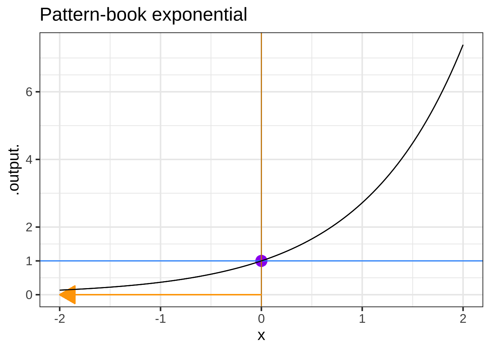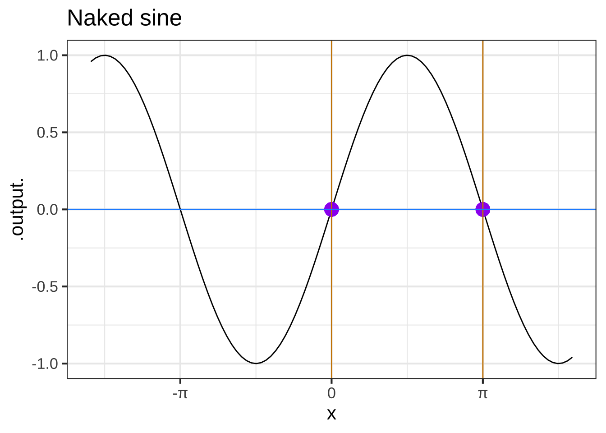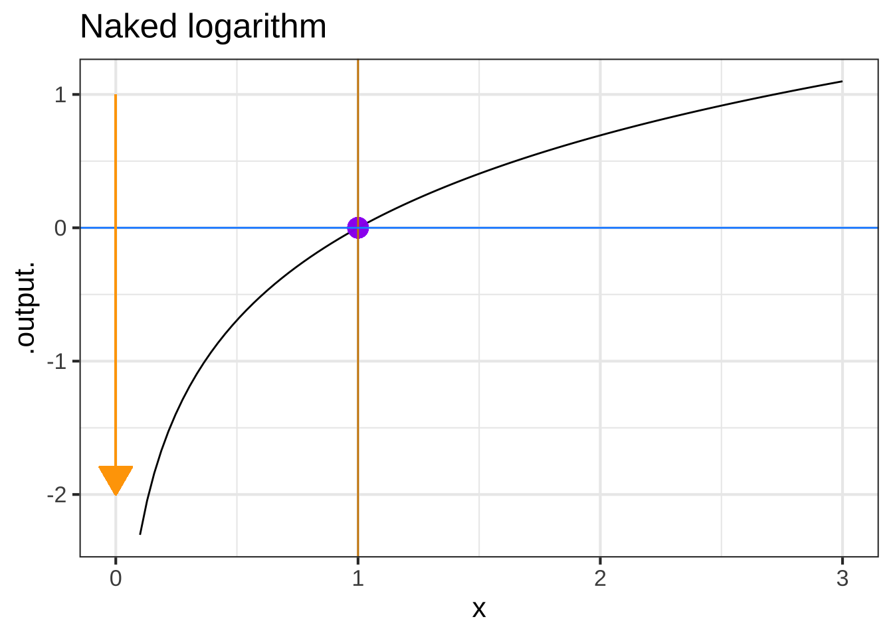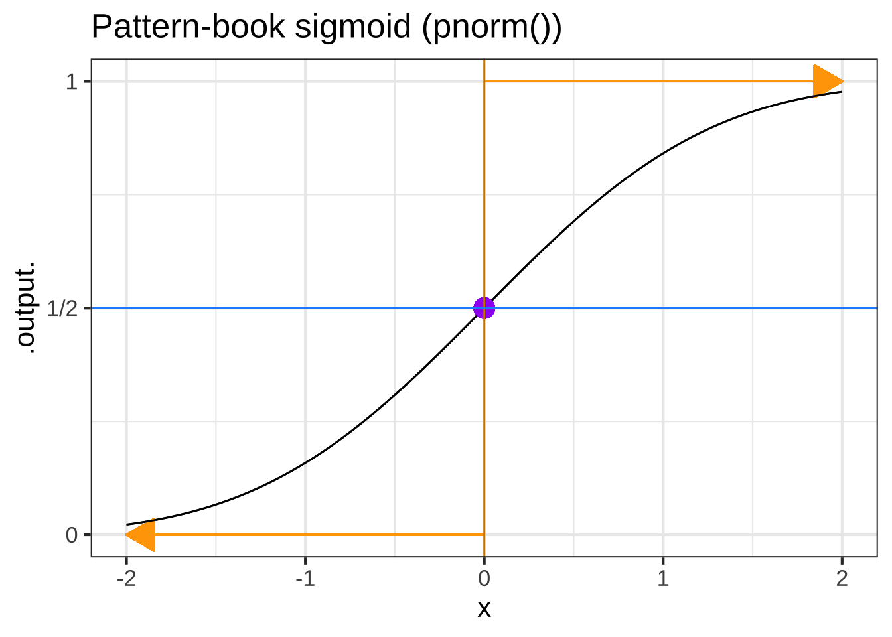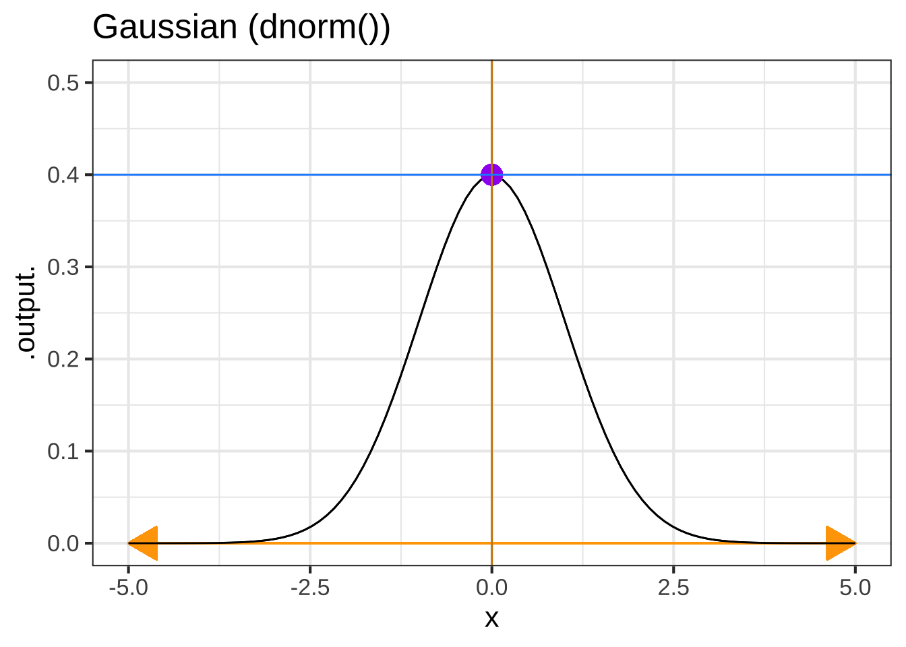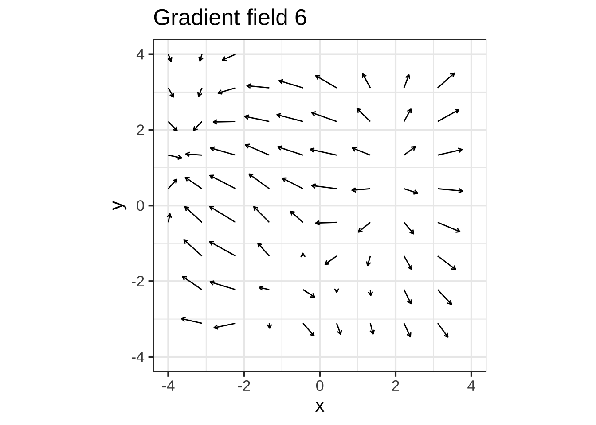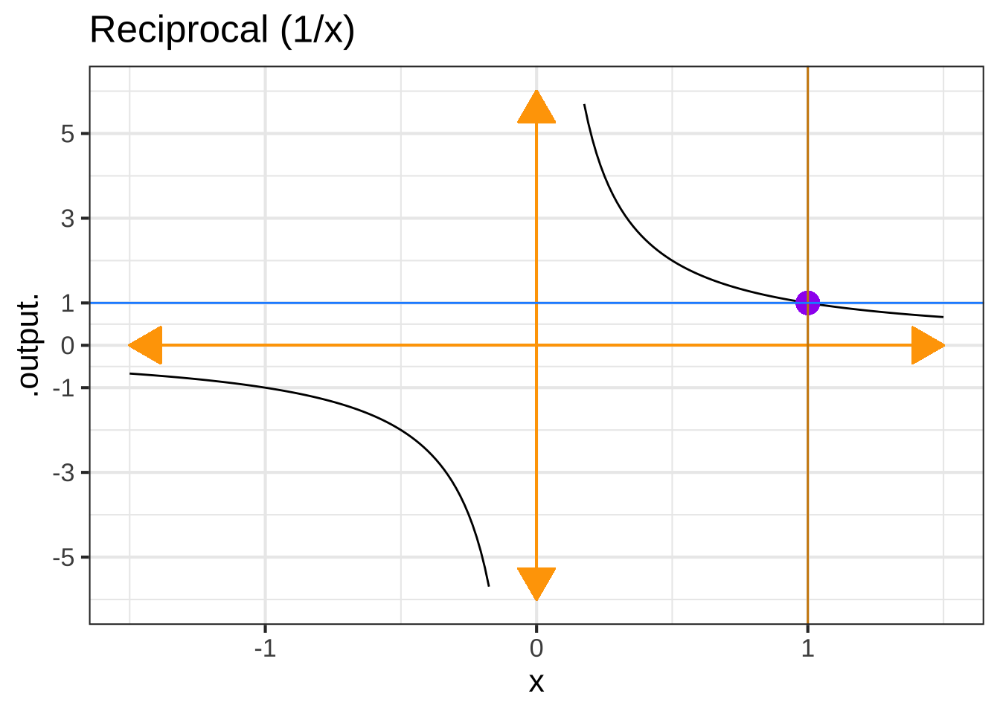
Each of the following plots shows a basic modeling function whose input scaling has the form \(x - x_0\). Your job is to figure out from the graph what is the numerical value of \(x_0\). (Hint: For simplicity, \(x_0\) in the questions will always be an integer.)
Question A In plot (A), what is \(x_0\)?
-2 ︎✘ -1 ︎✘ 0 ︎✘ 1 ︎✘ 2 Right! Right. Look for the input that generates the peak output value.
Question B In plot (B), what is \(x_0\)?
-2 ︎✘ -1 Right! Good. Look for an input that generates a positive going zero crossing. 0 ︎✘ 1 ︎✘ 2 ︎✘

Question C In plot (C), what is \(x_0\)?
-2 ︎✘ -1 Excellent! Right. The location of the vertical asymptote is the clue. 0 ︎✘ 1 ︎✘ 2 ︎✘
Question D In plot (D), what is \(x_0\)?
-2 ︎✘ -1 ︎✘ 0 ︎✘ 1 Good. The input where the output is half way between the two horizontal asymptotes 2 ︎✘
Question E In plot (E), what is \(x_0\)?
-2 Right! Right. The location of the vertical asymtote is the clue. -1 ︎✘ 0 ︎✘ 1 ︎✘ 2 ︎✘
Exercise 7.17: uKCIE
Each of the graphs shows two horizontal scales and one of the basic modeling functions. Which horizontal scale (black or blue) corresponds to the pattern-book function?
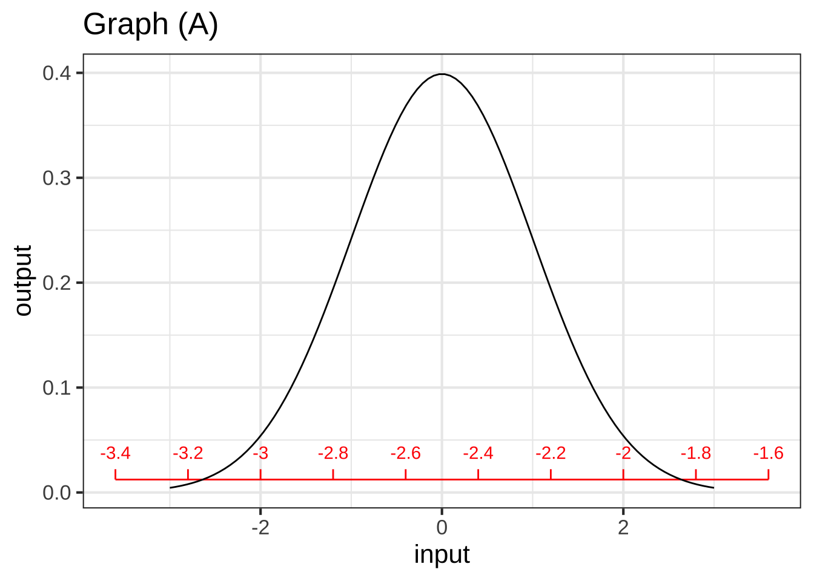Question A For graph (A), which scale corresponds to the pattern-book function?
black Good. blue ︎✘ neither ︎✘ both ︎✘ It can’t be both. There’s only one pattern-book function. When you scale the input, it becomes a “basic modeling function.”
Question B For graph (B), which scale corresponds to the pattern-book function?
black ︎✘ blue Correct. Right. The pattern-book function has an output of 1/2 when the output is zero. That’s what the blue scale shows. neither ︎✘ both ︎✘ It can’t be both. There’s only one pattern-book function. When you scale the input, it becomes a “basic modeling function.”
Question C For graph (C), which scale corresponds to the pattern-book function?
black ︎✘ blue Correct. The pattern-book sinusoid has a positive-going zero crossing at \(x=0\). That’s the blue scale. neither ︎✘ both ︎✘ It can’t be both. There’s only one pattern-book function. When you scale the input, it becomes a “basic modeling function.”Exercise 7.1: BLECL
Find the straight-line function that will give the value on the black scale for each point \(x\) on the blue scale. The function will take the blue-scale reading as input and produce the black-scale reading as output, that is: \[\text{black}(x) \equiv a (x - x_0)\]
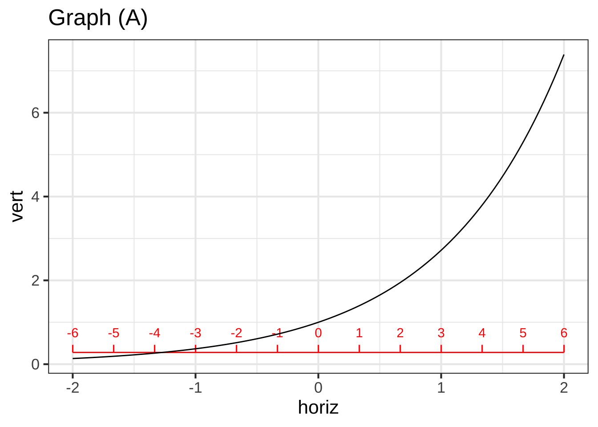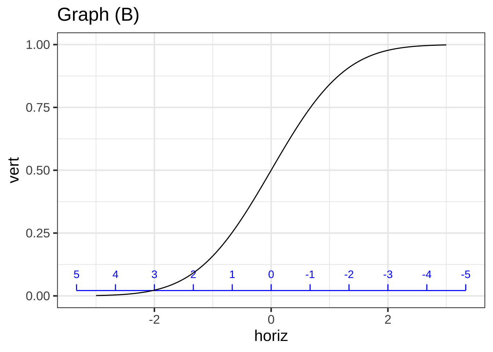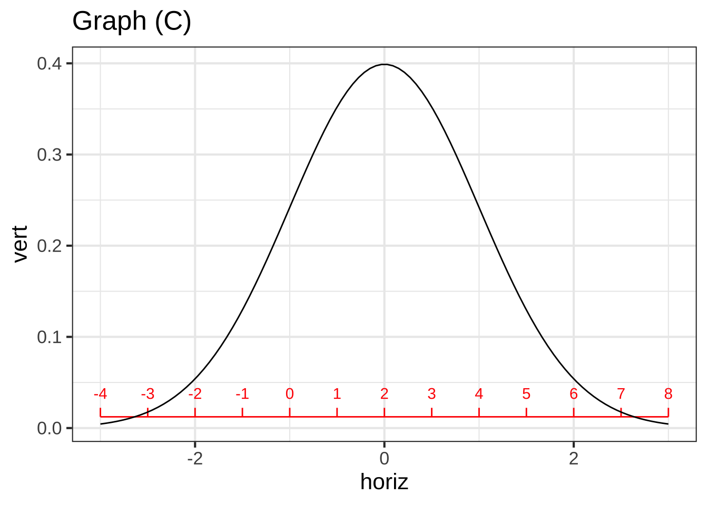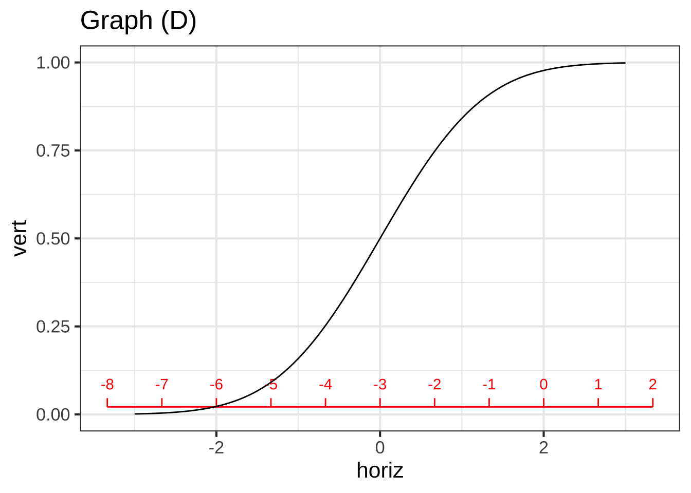
Question A For Graph A, which function maps blue \(x\) to the value on the black scale?
-
\(black(x) \equiv x/3\) Good.
-
\(black(x) \equiv 3\, x\) ︎✘ You’re going the wrong way, from black to blue.
-
\(black(x) \equiv x + 3\) ︎✘ Is there a horiztontal shift?
- \(black(x) \equiv x - 3\) ︎✘ Is there a horizontal shift?
Question B For Graph B, which function maps blue \(x\) to the value on the black scale?
-
\(black(x) \equiv -2\,x/3\) Correct.
-
\(black(x) \equiv 3\, x/2\) ︎✘ Look carefully at the \(\pm\) signs on the scales.
-
\(black(x) \equiv 2\,x/3\) ︎✘ Look carefully at the \(\pm\) signs on the scales.
- \(black(x) \equiv -3\,x/2\) ︎✘ You’re going the wrong way, from black to blue.
Question C For Graph C, which function maps blue \(x\) to the value on the black scale?
-
\(black(x) \equiv (x - 2)/2\) Excellent! Good. An interval of length 4 on the blue scale (say, from 2 to 6) becomes an interval of length 2 on the black scale. So you know that blue to black involves dividing by 2.
-
\(black(x) \equiv 3\, x\) ︎✘ Is there a shift
-
\(black(x) \equiv 2\,x\) ︎✘ Is there a shift?
- \(black(x) \equiv 2\,(x + 2)\) ︎✘ You’re going the wrong way, from black to blue.
Question D For Graph D, which function maps blue \(x\) to the value on the black scale?
-
\(black(x) \equiv 2 (x + 3)/3\) Excellent!
-
\(black(x) \equiv 3 (x - 3)/2x\) ︎✘
-
\(black(x) \equiv 3 (x+1)/2\) ︎✘
- \(black(x) \equiv 3(x - 2)/2\) ︎✘ You’re going the wrong way, from black to blue.
7.4 Linear combinations
We’ve discussed shifting the baseline of the exponential and sinusoid functions by adding a constant to the basic modeling function, like this:
\[f(t) \equiv A e^{kt} + C\\ \ \\ g(t) \equiv A \sin\left(\frac{2\pi}{P} t\right) + C\]
We’ve called this output scaling. It’s an example of a much more general and powerful way of contructing modeling functions called linear combinations.
In a linear combination, you start with one or more basic functions. For discussion, let’s call these \(f_1(t)\), \(f_2(t)\), \(f_3(t)\) and so on. In making a linear combination, multiply each of the basic functions by some quantity and add the results together:
\[\text{linear combination of}\ f_1(t)\ \text{and}\ f_2(t): \ \ A_1 f_1(t) + A_2 f_2(t)\] The quantities \(A_1\) and \(A_2\) are called scalars because they scale the functions. (In Chapter ?? you will see that we make a distinction between a scalar, which is a single quantity, and a vector, which is a set of scalars.)
It’s common to take linear combinations of functions with different inputs, for example \[h(x, y, t) \equiv 4 e^{-kt} + 7 y + 2\,\pnorm(x-3) - 19\]
In fields like statistics and economics and other social sciences, as well as clinical medical research, a great number of modeling techniques involve such combinations of functions of various inputs.
In engineering and physics, an important class of functions involves a linear combination of many sinusoids of different periods, e.g.
\[\text{signal}(t) \equiv A_1 \sin\left(\frac{2 \pi}{P_1}t\right) + A_2 \sin\left(\frac{2 \pi}{P_2}t\right) + A_3 \sin\left(\frac{2 \pi}{P_3}t\right) + \cdots\]
Linear combination of functions provides a powerful and flexible general-purpose modeling technique in part because many physical systems seem to work this way and in part because the methods for finding the scalars—\(A_1\), \(A_2\), and so on—have an extremely strong theory and fast computer implementations that automatically solve the problem once the modeler has selected the functions she wants to combine. In Block 4, we use the name target problem to refer the problem of finding scalars to match as well as possible a linear combination to data.
An expression like \(A e^{kx} + C\) combines the exponential (obviously!) and a second function that isn’t immediately obvious: the constant function \(\text{constant}(x) \equiv 1\). It might be overkill to re-write the expression as \(A e^{kx} + C\, \text{constant}(x)\) but get in the habit of seeing the constant function as a constant presence in linear combinations!
Polynomials are an important example of linear combinations. Something like \(p(x) \equiv a + b t + c t^2\) is a linear combination of the constant function, the proportionality function, and the square function.
Exercise 7.21: AVNOW

The graph shows a function that is a linear combination of three x-shifted gaussian functions \[a_1 \dnorm(x-3.5) + a_2 \dnorm(x-0.5) + a_3 \dnorm(x-(-4))\]
Question A Estimate the scalars \(a_1, a_2\), and \(a_3\) for the function drawn in Plot (A). (Be sure to get the order right!)
-
\(a_1 = 0.3, a_2 = 0.15, a_3=0.2\) Right-oh!
-
\(a_1 = 0.15, a_2 = 0.2, a_3=0.3\) ︎✘
-
\(a_1 = 0.2, a_2 = 0.3, a_3=0.15\) ︎✘
- \(a_1 = 0.15, a_2 = 0.3, a_3=0.2\) ︎✘
Plot (B) shows a function that is a linear combination of four x-shifted sigmoid functions. Each the multiplicative scalars is either 1 or \(-1\). Recall that a handy fiducial point for the sigmoid function is the input at which the output is 1/2.
Question B Where are the fiducial points for the four sigmoids?
-
\(-8, -2, 3, 7\) Right-oh!
-
\(-6, -4, 0, 6\) ︎✘
-
\(-9, -8, 1, 5\) ︎✘
- \(-2, 2, 4, 6\) ︎✘
Question C What are the scalar multipliers on each sigmoid, in order from the leftmost to rightmost?
-
\(1, -1, 1, -1\) Good.
-
\(1, -1, -1, 1\) ︎✘
-
\(-1, 1, 1, -1\) ︎✘
- \(-1, 1, -1, 1\) ︎✘
Exercise 7.23: FISHU
According to data from the US National Health and Nutrition Evaluation Survey, the average height of adult females is 157 cm vs 167 for adult males. The standard deviations are 17 cm and 22 cm respectively. A good model for the person-to-person variation for females is dnorm(height, mean = 157, sd = 17) and similarly for males.
To see the overall distribution of adult height, regardless of sex, make a linear combination of the distribution for females and for males, giving each a scalar of one-half (since the population is roughly 50-50 female/male).
Open a SANDBOX and construct the linear combination function for the overall distribution. Use the scaffolding to plot out the distributions for the individual sexes and the overall distribution.
female <- makeFun(dnorm(height, mean = 157, sd=17) ~ height)
male <- makeFun(dnorm(height, mean = 167, sd=22) ~ height)
overall <- makeFun(female(height)/2 + male(height)/2 ~ height)
#overall <- makeFun( __your_linear_combination_here__)
slice_plot(female(height) ~ height, domain(height=c(100,220)), color="orange3",
label_x=.5, label_text="F") %>%
slice_plot(male(height) ~ height, color="dodgerblue", label_text="M", label_x=.8) %>%
slice_plot(overall(height) ~ height, color="black", size=2)Some people erroneously think that since the mean height of men is larger than women by 10cm, you can readily distinguish between the sexes based on height. However, notice that the overall distribution (plotted in black) does not show a dip between the sexes: there is no clear separation based on height.
As a thought experiment, let’s increase the separation in mean height from the actual value of \(167-157=10\) cm to something larger. You can increase the separation by 5 cm, for example, by making the men’s mean height 167+5.
Question A What’s the smallest increase in separation (in cm) that produces a barely visible dip between the sexes in the overall height distribution?
5 ︎✘ 10 ︎✘ 15 ︎✘ 20 ︎✘ 25 ︎✘ 30 Excellent!
Exercise 7.25: FKLEU
The graph shows a linear combination of two sinusoids, one of period 0.6 and the other of period 2. There is also a baseline shift. That is, the graph shows the function:
\[a_1 \sin\left(\frac{2\pi}{2}t\right) + a_2 \sin\left(\frac{2\pi}{0.6} (t-.3)\right) + a_3\]

Question A What is \(a_3\)?
-4 Correct. -2 ︎✘ 0 ︎✘ 2 ︎✘ 4 ︎✘
Question B What is \(a_1\)?
0 ︎✘ 1 ︎✘ 2 Good. 3.5 ︎✘
Question C What is \(a_1\)?
0 ︎✘ 1 Right-oh! 2 ︎✘ 3.5 ︎✘